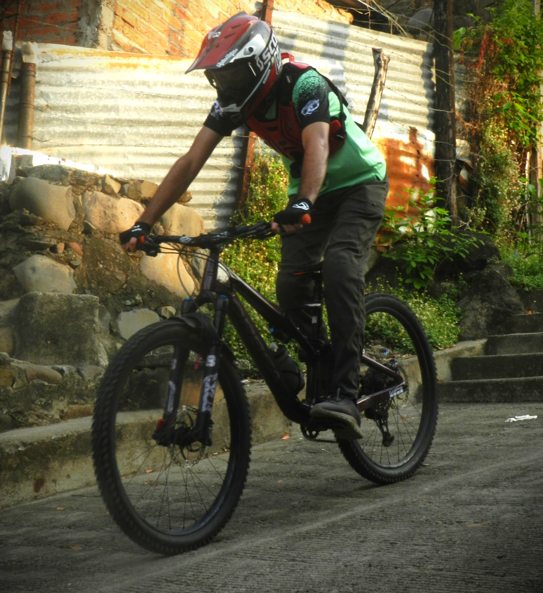
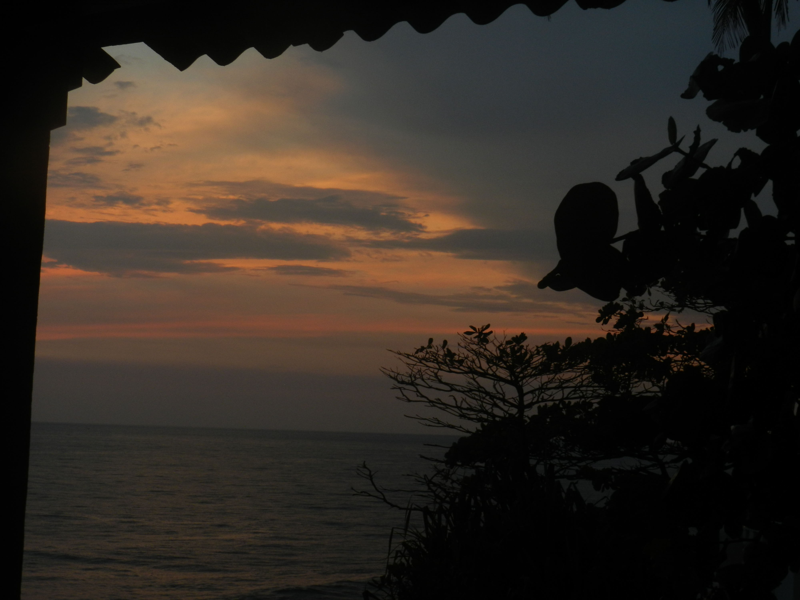
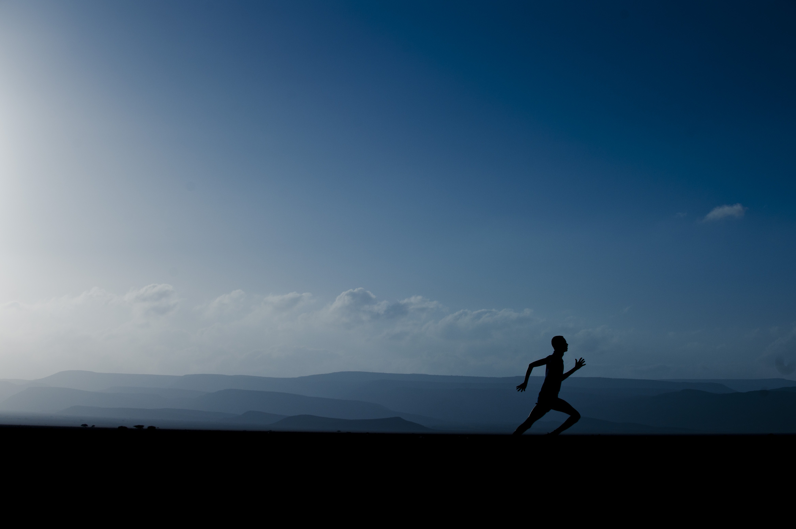
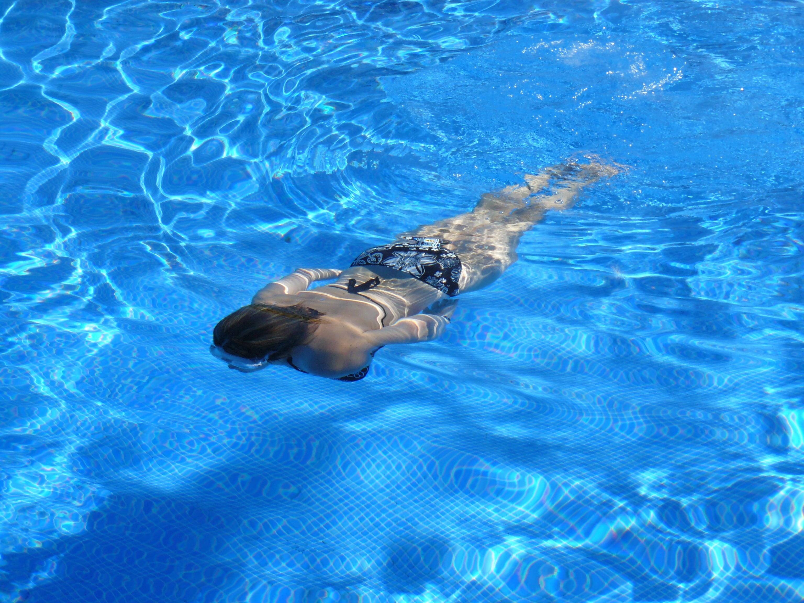

El ciclismo de montaña, también conocido como MTB, es una disciplina extrema y emocionante que se practica en entornos naturales, como bosques, senderos escarpados y montañas. A diferencia del ciclismo de carretera, exige dominar una gran variedad de terrenos irregulares, rocas y raíces, lo que pone a prueba la destreza y el temple del atleta.
Para disfrutar de esta actividad y garantizar la seguridad, se utilizan bicicletas especialmente diseñadas que cuentan con neumáticos anchos para mayor tracción y sistemas de suspensión que amortiguan los impactos. Además, rodar en medio de la naturaleza proporciona una inigualable sensación de libertad y aventura, sumado a excelentes beneficios para la salud física y mental.
Para conocer más sobre cómo se desenvuelve este deporte en distintos terrenos y aprender sobre sus modalidades: contacta al +503 48291971

Los atardeceres son uno de los espectáculos naturales más bellos, donde el cielo se tiñe de tonos cálidos y vibrantes.
Observar un atardecer transmite calma, invita a reflexionar y conecta con la naturaleza de una manera única.
Capturar estos momentos en fotografía es una forma de conservar la magia y compartirla con los demás.
si deseas mas informacion comunicate al +503 48291971 "ficticios"

Correr es mucho más que un simple ejercicio físico; es un acto de liberación y conexión con uno mismo. Cuando los tenis impactan contra el suelo, el ruido del mundo exterior comienza a desvanecerse, sustituido por el ritmo acompasado de la respiración y los latidos del corazón.
Cada zancada se convierte en una declaración de intenciones, un espacio donde el estrés del día a día se disuelve en el asfalto.
No importa la velocidad ni la distancia; lo que verdaderamente cuenta es la sensación de libertad que se experimenta al avanzar con la única fuerza de las propias piernas.
si deseas mas informacion comunicate al +503 48291971 "ficticios"

Nadar es mucho más que un simple ejercicio físico; es un acto de liberación y conexión con uno mismo. Cuando los tenis impactan contra el suelo, el ruido del mundo exterior comienza a desvanecerse, sustituido por el ritmo acompasado de la respiración y los latidos del corazón.
Es un espacio de meditación en movimiento, donde la mente encuentra calma mientras el cuerpo se desplaza con fluidez, fluyendo en un elemento que desafía la gravedad y regala una profunda paz interior.
si deseas mas informacion comunicate al +503 48291971 "ficticios"